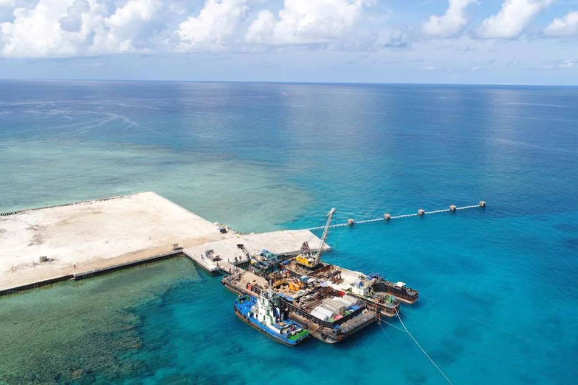

US says energy development by S. China Sea claimants must be 'free of coercion, bullying’
Posted at Dec 04 2020 05:38 PM
MANILA — The United States has reiterated its support for South China Sea claimants to develop oil and gas resources in their respective exclusive economic zones, criticizing China for pressing its “unlawful maritime claim” in the disputed waters by bullying its neighbors.
Francis Fannon, assistant secretary at the US Department of State Bureau of Energy Resources, said in a teleconference that countries bordering the South China Sea should be free to develop energy resources “free of coercion and bullying.” “We’ve been very clear, we recognize the sovereignty of the exclusive economic zone of countries in the region to develop their own resources free of coercion and bullying,” said Fannon
He expressed US support for partner countries in achieving their self-determined energy ambitions. The US recently launched the Asia EDGE initiative, a US whole-of-government approach in growing sustainable and secure energy markets throughout the Indo-Pacific. The initiative also aims to strengthen energy security, increase energy diversification and trade, and expand energy access across the region.
In the Philippines, Asia EDGE has launched the Liquified Natural Gas (LNG) Investors’ Guide, a product of the US-funded Gas Policy Development Project (GPDP) which “provides information for potential energy players” who wish to contribute to the country’s objective of achieving energy security. LNG Investors’ Guide provides pertinent information for the private sector in setting up an LNG facility in the Philippines, “fostering a transparent and systematic application and permitting process that coincide with the ease of doing business.”
Fannon did not comment on the Department of Energy’s reported moratorium regarding new coal power plant projects but spoke of continued cooperation with the Philippine government for investments on gas developments.
“Between Vietnam and the Philippines, together, they are… two greatest areas for gas… development of that market… nearly 3 billion dollars of US investment in these countries. So we are excited about continuing the partnership and we think we have a strong foundation for continued cooperation with the government of the Philippines,” he said. Energy Secretary Alfonso Cusi in mid-October announced the government's decision to lift a 6-year-old moratorium on oil and gas exploration in the disputed sea, saying it was a unilateral move.
Cusi had said there was no prohibition on ending the moratorium unilaterally and hoped it could expedite projects and help the Philippines address energy security issues. Chinese Foreign Ministry spokesperson Zhao Lijian, meanwhile, hoped that the lifting of the moratorium would lead to a joint venture between the two countries.
The US has been vocal in asserting freedom of navigation in the South China Sea, a critical waterway for global trade. China is asserting ownership over nearly all of the waters, while the Philippines, Vietnam, Malaysia, Brunei and Taiwan have partial claims.
Related Stories